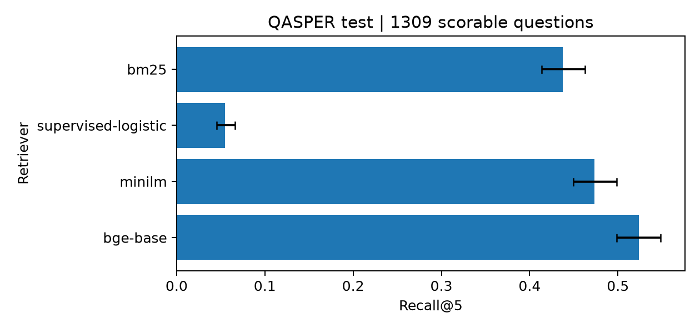
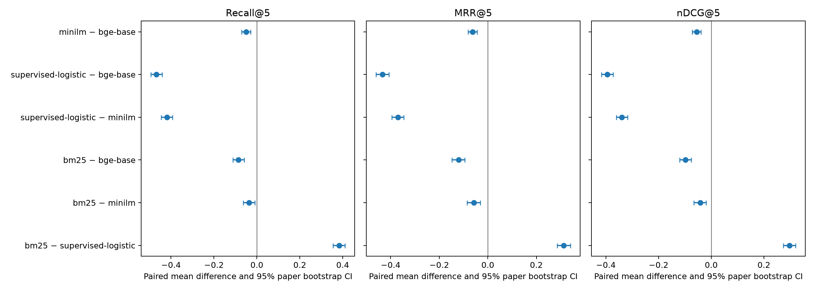
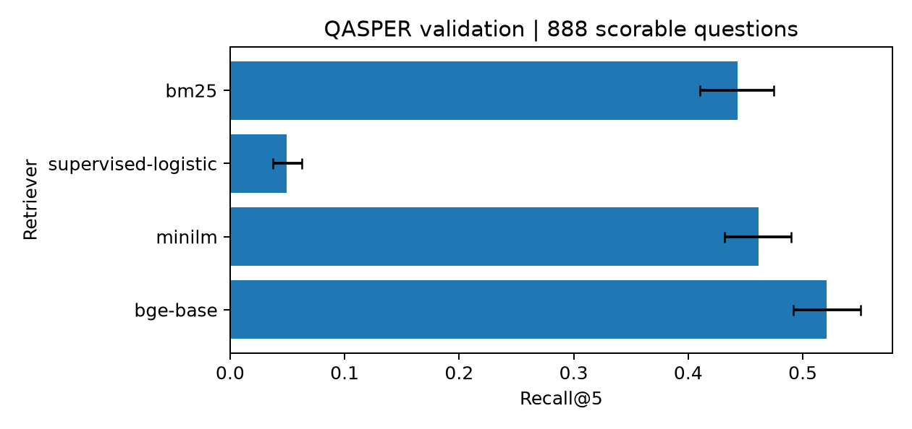
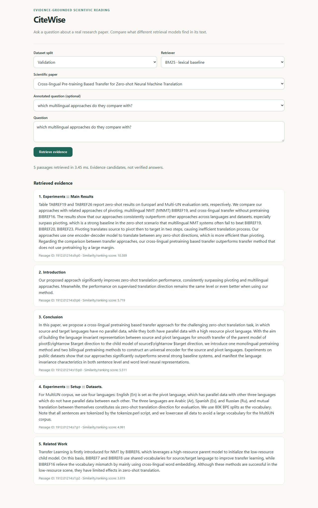
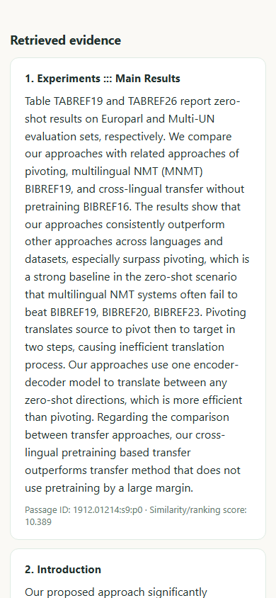

Final evaluation and mini-project report
QASPER official splits | Paragraph-level retrieval | 20 October 2026
Researchers looking for evidence in a paper must find passages that support a question, often across long sections of technical text. CiteWise addresses this retrieval step: a user selects a real QASPER paper, asks a question, and receives ranked paragraph candidates with section headings and stable evidence IDs. It does not generate answers or certify scientific truth.
The study asks: How do lexical retrieval, a QASPER-trained lexical ranker, and pretrained sentence encoders differ in paragraph evidence ranking, measured latency, and practical deployment cost? Its contribution is a controlled comparison on original paper-level splits, a documented failure of hard-negative logistic training, a reproducible measurement pipeline, and a browser application that presents passages from the source paper.
The final comparison contains four retrieval methods: BM25, supervised logistic, MiniLM, and BGE-base. Only MiniLM and BGE-base are neural retrievers. E5-base-v2 and GTE-base were configured as fallbacks but could not be downloaded in the execution environment; BGE-M3 and Qwen3 were not run. Therefore this report does not claim four state-of-the-art neural evaluations. If the faculty requires four neural models, that criterion remains unmet.
The test split was held out for selection, the methodology and model list were frozen, and the four-method test evaluation was run once. Its result is an estimate for this benchmark sample, not evidence that a retriever answers questions correctly without inspecting its cited passage. CiteWise remains a local application; no public deployment or human accessibility evaluation is claimed.
QASPER frames information seeking around a particular research paper. Dasigi et al. collected questions from readers who saw a paper title and abstract, then gathered answers and supporting evidence from full text [1]. This provides human evidence paragraphs for retrieval evaluation. CiteWise uses the paper-local setting and mapped textual evidence, while excluding unanswerable and unmatched questions from ranking metrics.
Chen et al.'s M3-Embedding combines dense, sparse, and multi-vector retrieval and supports multilingual inputs and long documents [2]. Its multi-function training is relevant to retrieval versatility, but CiteWise neither uses nor reproduces M3-Embedding. BGE-M3 was an intended model comparison and has no measured CiteWise score.
Saad-Falcon et al.'s ARES evaluates retrieval-augmented generation along context relevance, answer faithfulness, and answer relevance, using trained language-model judges and a small human-labeled set for prediction-powered inference [3]. CiteWise instead evaluates paragraph ranking against QASPER annotations. ARES motivates keeping retrieval quality distinct from generated-answer quality; CiteWise does not claim answer-faithfulness metrics.
Zhang et al.'s Qwen3 Embedding preprint describes embedding and reranking checkpoints at multiple scales, trained with large-scale pretraining and supervised fine-tuning [4]. It motivates comparing quality with resource cost. Qwen3-Embedding-0.6B was not downloaded or evaluated here, so no published benchmark number is attributed to CiteWise.
Wang et al.'s Astute RAG studies imperfect retrieved context and conflicts between parametric and retrieved knowledge, then proposes a source-aware generation process [5]. CiteWise shares the concern that a plausible passage can still be misleading, but stops at ranking and displays source text for inspection. It does not implement Astute RAG's generation or conflict-resolution pipeline.
Liu and Zhang's Exp4Fuse applies LLM-based query expansion to sparse retrieval, forms rankings for original and expanded queries, and fuses the lists [6]. This supports studying rank fusion as a future extension. CiteWise compares the current retrievers without query expansion and makes no Exp4Fuse implementation or performance claim.
Asai et al.'s OpenScholar indexes a large scholarly corpus and synthesizes citation-backed responses to multi-paper scientific questions [7]. It demonstrates the broader research-synthesis setting. CiteWise is narrower: retrieval is constrained to one paper and evaluated against annotated paragraphs.
Together these works distinguish model quality from system scope. A dense encoder, a fusion method, an evaluator for generated answers, and a literature-synthesis system are not interchangeable comparisons. CiteWise's contribution is an engineering study of within-paper paragraph ranking. Its strongest experimentally supported finding is a quality/latency trade-off between BGE-base and MiniLM, not a reproduction of published leaderboard scores. The original four-neural-model ambition remains incomplete rather than being conflated with the four-method comparison.
Architecture. A QASPER paper is loaded with original paragraph IDs, section names, and annotations. The user selects a paper and question. A chosen retriever scores every original paragraph in that paper; the API returns ranked passage IDs, text, headings, scores, and latency. The UI labels results as evidence candidates, not verified answers.
Data discipline. The logistic classifier was fitted on train papers only with balanced logistic regression (max_iter=1500, random_state=42). Model and protocol decisions used validation. The Phase 5 freeze retained the four existing methods and did not add E5/GTE because their pinned weights were unavailable. No model or threshold was selected from test outcomes.
Encoders. MiniLM uses plain text, attention-masked mean pooling, 256-token truncation, and normalized float32 embeddings. BGE-base uses the documented short-query instruction Represent this sentence for searching relevant passages: , plain passages, CLS pooling, 512-token truncation, and normalized float32 embeddings. Pinned snapshot revisions and the validation-worker package manifest are recorded in the freeze/benchmark evidence. Neural encoders remained pretrained; only the logistic ranker was fit on QASPER.
Metrics. For a query gold set G and top-k results R, Recall@k = |G intersect R| / |G|. MRR@k is 1/r for the first relevant rank r, or zero if none occurs in the top k. Binary nDCG@k is DCG@k / IDCG@k, where each relevant result contributes 1/log2(i+1) at one-based rank i. Scores are macro-averaged over scorable questions. Uncertainty intervals resample papers as clusters, keeping each paper's questions together; 2,000 replicates use seed 42. Paired intervals use identical question IDs.
The source is Allen Institute's QASPER dataset, revision 91bc63e221475d59a6e17e4299fbfc5a919d7c7a, distributed under CC BY 4.0 [1]. The official paper-level partitions are retained; no random paragraph split or cross-split resampling was performed. The prepared data audit records:
| Official split | Papers | Non-empty paragraphs | Questions | Scorable | Unmatched/no text | Unanswerable |
|---|---|---|---|---|---|---|
| Train | 888 | 46,882 | 2,593 | 2,098 | 224 | 271 |
| Validation | 281 | 13,266 | 1,005 | 888 | 57 | 60 |
| Test | 416 | 19,817 | 1,451 | 1,309 | 63 | 79 |
Preparation strips empty paragraphs and collapses whitespace. Evidence phrases are whitespace-normalized and case-folded before mapping to stable IDs tied to original section/paragraph positions. Repeated identical paragraph text can map to multiple IDs. Figure/table-only annotations are counted as unsupported textual evidence rather than converted into fabricated paragraphs: 386 items in train, 253 in validation, and 459 in test.
A question is scorable if at least one annotated textual evidence phrase maps to a paragraph. Unanswerable questions and questions without mapped text evidence are excluded consistently for every method and reported as coverage exclusions. The final test run evaluated all 1,309 scorable questions across 408 papers; its 63 unmatched/no-text and 79 unanswerable questions were excluded. The final test questions were not used for training or model selection.
The frozen four-method comparison was evaluated once on all 1,309 scorable QASPER test questions. Table intervals are percentile 95% paper-cluster bootstrap intervals (408 clusters, 2,000 replicates, seed 42). Paired intervals use the same paper resamples across methods.
| Method | Recall@5 [95% CI] | MRR@5 [95% CI] | nDCG@5 [95% CI] |
|---|---|---|---|
| BM25 | 43.77% [41.38, 46.24] | 37.92% [35.63, 40.19] | 34.57% [32.61, 36.58] |
| Supervised logistic | 5.50% [4.53, 6.60] | 6.66% [5.54, 7.91] | 4.87% [4.03, 5.85] |
| MiniLM | 47.36% [44.92, 49.87] | 43.70% [41.34, 46.07] | 38.77% [36.66, 40.90] |
| BGE-base | 52.35% [49.84, 54.86] | 49.97% [47.45, 52.30] | 44.32% [42.18, 46.47] |

Figure 1. Test Recall@5 with paper-cluster 95% intervals; generated from the frozen evaluation output. BGE-base leads the tested methods on all three ranking measures. Relative to MiniLM, its point gain is 4.99 percentage points in Recall@5, 6.27 in MRR@5, and 5.55 in nDCG@5. The test comparison is consistent with the validation-selected quality-first model; it was not used to retune the system.
Paired BGE-base minus MiniLM improvements were +4.99 percentage points in Recall@5 [95% CI 2.88, 7.08], +6.27 in MRR@5 [4.44, 8.17], and +5.55 in nDCG@5 [3.95, 7.17]. Paired BGE-base minus BM25 improvements were +8.57 [5.93, 11.12], +12.05 [9.48, 14.81], and +9.75 [7.62, 12.05]. All six intervals exclude zero. They are descriptive test uncertainty intervals and are not adjusted for multiple comparisons.

Figure 2. Paired test differences (model A minus model B). The bootstrap resamples papers and preserves the paired query rows.
The unchanged logistic ranker remains a negative result. Its training sampler retained positives and selected only the highest-BM25 hard negatives, yielding a 22.3% positive-pair share; selected negatives had higher mean BM25 than positives (5.04 versus 3.33). On full validation candidates the direction reversed (positive mean 3.06, non-relevant mean 1.70). The classifier then ranked every paragraph at inference. Standardization and a bounded BM25-shortlist reranker did not justify replacing the baseline. This supports a candidate-distribution-mismatch explanation but does not prove it is the sole cause.
Validation failure review identified lexical/semantic disagreements and long-passage truncation risks. MiniLM's 256-token cap flagged 144 gold paragraphs above its limit; BGE-base's 512-token cap flagged 13. These flags cannot locate the exact answer span, because QASPER annotates paragraphs rather than token spans. Unsupported figure/table and unanswerable evidence remain outside text-ranking scores.
The four evaluated entries are different classes of retrieval approach, not four neural state-of-the-art models.
| Method | Class | Test Recall@5 | Test nDCG@5 | Role and limitation |
|---|---|---|---|---|
| BM25 | Classical lexical retrieval | 43.77% | 34.57% | Fast baseline; relies on term overlap |
| Supervised logistic | Train-fitted lexical ranker | 5.50% | 4.87% | Retained negative result; hard-negative mismatch |
| MiniLM-L6-v2 | Pretrained neural encoder | 47.36% | 38.77% | Faster neural option; shorter input limit |
| BGE-base-en-v1.5 | Pretrained neural encoder | 52.35% | 44.32% | Highest measured retrieval quality; higher CPU setup/encoding cost |

Figure 3. Validation Recall@5 with paper-cluster intervals. Model selection used this validation comparison, not the test results.
Only MiniLM and BGE-base count as neural retrievers. E5-base-v2 and GTE-base have configured preprocessing and pinned MIT snapshots, but neither checkpoint could be fetched and neither was evaluated. BGE-M3 and Qwen3 were not downloaded or initialized. Their published scores are not CiteWise results. If the faculty rubric strictly requires four evaluated neural or state-of-the-art models, this requirement remains unmet.
BGE-base is the selected quality-first demo model; MiniLM is the lower-latency alternative. Validation warm P50 was 92.48 ms for BGE-base and 20.07 ms for MiniLM. Final-test P50/P95 were 110.37/12,887.97 ms and 25.98/1,684.73 ms, respectively. The legacy test timer includes lazy model initialization and per-paper embedding, so these observed percentiles are not steady-state service latency.
CiteWise uses FastAPI and a browser interface over real QASPER papers. The user selects a paper, loads its annotated questions, enters a question, chooses a retriever, and sees ranked passages with section, passage ID, and score. Results are evidence candidates rather than generated answers.


Playwright passed six local browser tests covering BM25 and BGE-base evidence/API parity, paper metadata, loading feedback, invalid requests, visible keyboard focus, desktop layout, and mobile flow at 375px/390px. A standalone axe scan reported zero WCAG 2.1 A/AA violations. These are automated checks, not manual screen-reader, assistive-technology, or human usability results.
The Dockerfile stages pinned model assets at image build, disables Hub downloads at runtime, uses one non-root Uvicorn worker, reads configuration from environment variables, and defines /api/health. The image was not built because the Docker Engine is unavailable at the named pipe. No hosting account or public HTTPS endpoint was verified. Local browser tests are not public-deployment evidence.
Conclusion. BGE-base produced the highest retrieval scores among the measured methods on validation and the one-time held-out evaluation. The logistic ranker remains a meaningful failure analysis; MiniLM remains the faster neural alternative. CiteWise has an evidence-backed local demo and reproducible study, but public hosting and a four-neural-model comparison remain unverified.
[1] P. Dasigi, K. Lo, I. Beltagy, A. Cohan, N. A. Smith, and M. Gardner. "A Dataset of Information-Seeking Questions and Answers Anchored in Research Papers." Proceedings of NAACL-HLT, 2021, pp. 4599-4610. https://aclanthology.org/2021.naacl-main.365/
[2] J. Chen et al. "M3-Embedding: Multi-Linguality, Multi-Functionality, Multi-Granularity Text Embeddings Through Self-Knowledge Distillation." Findings of ACL, 2024, pp. 2318-2335. https://aclanthology.org/2024.findings-acl.137/
[3] J. Saad-Falcon, O. Khattab, C. Potts, and M. Zaharia. "ARES: An Automated Evaluation Framework for Retrieval-Augmented Generation Systems." NAACL-HLT, 2024, pp. 338-354. https://aclanthology.org/2024.naacl-long.20/
[4] Y. Zhang et al. "Qwen3 Embedding: Advancing Text Embedding and Reranking Through Foundation Models." arXiv:2506.05176, 2025. https://arxiv.org/abs/2506.05176
[5] F. Wang et al. "Astute RAG: Overcoming Imperfect Retrieval Augmentation and Knowledge Conflicts for Large Language Models." ACL, 2025, pp. 30553-30571. https://aclanthology.org/2025.acl-long.1476/
[6] L. Liu and M. Zhang. "Exp4Fuse: A Rank Fusion Framework for Enhanced Sparse Retrieval using Large Language Model-based Query Expansion." Findings of ACL, 2025, pp. 163-173. https://aclanthology.org/2025.findings-acl.9/
[7] A. Asai et al. "Synthesizing scientific literature with retrieval-augmented language models." Nature 650, 857-863 (2026). https://doi.org/10.1038/s41586-025-10072-4
Data and model cards. QASPER dataset card: https://huggingface.co/datasets/allenai/qasper. MiniLM: https://huggingface.co/sentence-transformers/all-MiniLM-L6-v2. BGE-base-en-v1.5: https://huggingface.co/BAAI/bge-base-en-v1.5. E5/GTE cards and licenses are listed in docs/LICENSING.md; those fallbacks were not evaluated.